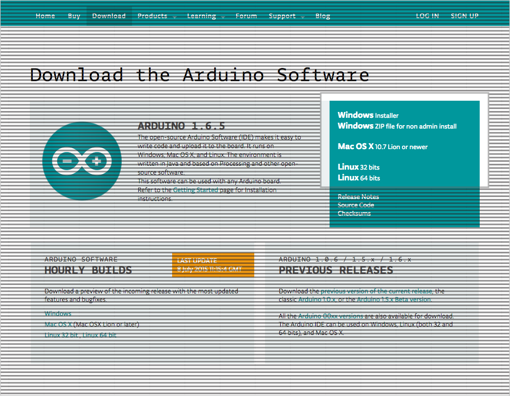
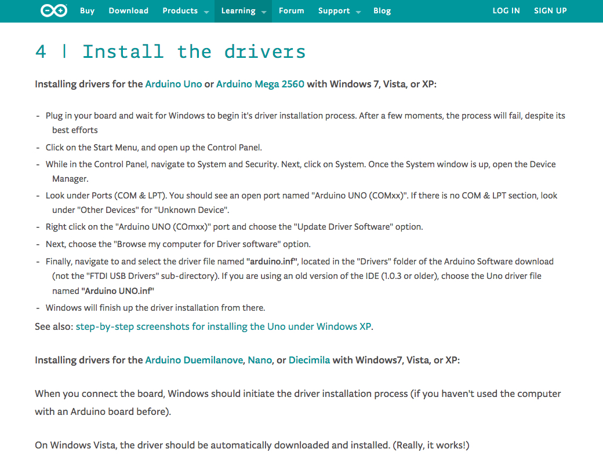

Drivers
5 minutes

Select your computer’s operating system.
Windows

To control your newly assembled X-Carve, head on over to the Arduino homepage and click on the “Download” button. Downloading these drivers are necessary to allow communication between your PC and Arduino.
Select your computer’s operating system by clicking on “Windows Installer.”

We encourage you to contribute to the Arduino Software, however you can start your download immediately by clicking on “Just Download.” 
Certain versions of Windows require you to manually assign the drivers to the Arduino. Follow the directions above if you are using Windows 7, Vista, or XP.
DO NOT load a sketch from the arduino IDE or else the pre-loaded machine firmware will be wiped from the Arduino.
Get Arduino SoftwareMac
You don’t need to install any drivers to connect to your machine. Hooray!